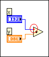
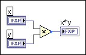
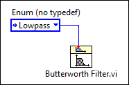
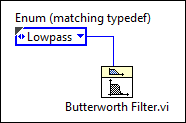
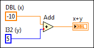
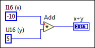
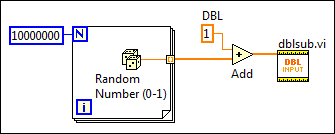

Coercion dots appear on block diagram nodes to alert you that LabVIEW converted the value passed into the node to a different representation. LabVIEW places a coercion dot on the border of the terminal where the conversion takes place. Because VIs and functions can have many terminals, a coercion dot can appear inside an icon if you wire through one terminal to another terminal.
LabVIEW places red coercion dots on block diagram nodes when you connect a wire of one numeric type to a terminal of a different numeric type or when you connect any non-variant wire to a variant terminal.
For example, LabVIEW places a red coercion dot on the Add function in the following illustration because the function requires two inputs of matching numeric data types, but receives a double-precision, floating-point number and an integer. The data types are similar enough that LabVIEW can coerce the integer and still perform the add operation.

LabVIEW places blue coercion dots on the output terminals of Numeric functions when you manually configure fixed-point output settings for a function. The dot indicates that LabVIEW does not adjust the output data type automatically to avoid overflow and rounding errors.
The following block diagram shows a blue coercion dot.

Coercion dots can affect memory usage or overall performance of a VI in the following ways:
If you match data types, you can avoid unnecessary coercions.
|
Tip��When you move the cursor over a terminal with a coercion dot, the Connected Wire Data Type field of the Context Help window displays the data type of the wire connected to the VI or function. To eliminate coercion dots, match the Connected Wire Data Type to the Terminal Data Type. |
When you wire an instance of a type definition to an object that does not link to that same type definition, LabVIEW places a coercion dot on the terminal receiving the data to warn you that if you edit the type definition, the VI may break or generate inaccurate data.
 |
Note��If you wire a type definition to an object of the same data type, LabVIEW also coerces the type definition unless the object requires the same type definition. You can avoid the coercion by deleting the type definition and wiring the same parameter without a type definition to the object. |
If you edit the type definition of an object wired to a cluster or an enum, the wire connecting to the cluster or enum breaks.
The following block diagram illustrates a type definition coercion that can affect the accuracy of the results and break a wire if you edit the type definition. In this example, the input on the subVI links to a type definition that defines the filter type.

LabVIEW places a coercion dot on the wired terminal of the subVI to indicate that the enum constant does not link to the same type definition.
The following block diagram illustrates a use of type definitions that maintains the accuracy of the results and does not break the wire if you edit the type definition.

You can match the type definition of the input on the subVI by copying the object that links to the type definition or by replacing the object that does not link to the type definition with an instance of the type definition. You also can match the type definition of the input of the subVI by right-clicking the input terminal and selecting Create�Constant from the shortcut menu. The constant links to the type definition automatically.
When manipulating simple scalar numeric data types, LabVIEW coerces to the data type that does not result in fractional data loss. If both data types are integers, LabVIEW coerces the data type with the lower maximum value to the data type with the higher maximum value.
The following block diagram illustrates a coercion that does not affect the accuracy of the results.

In this example, when adding a double-precision, floating-point numeric to a long integer, LabVIEW coerces the long integer to a double-precision, floating-point numeric and adds the two values together. The coercion dot that LabVIEW places on the Add function does not change the result of the operation because LabVIEW coerces the data type with the lower maximum value to a more precise data type. However, you should match data types when possible.
If you want to make sure LabVIEW coerces the data to the type you want, change the data type of a control, constant, or indicator by right-clicking the object and selecting Representation from the shortcut menu.
The following block diagram illustrates a coercion that causes inaccurate results.

In this example, LabVIEW coerces the signed integer to an unsigned integer. Because LabVIEW attempts to coerce a negative value to a data type that does not support negative values, LabVIEW generates a value of 65,531 instead of -5. To avoid generating inaccurate data, change the representation of block diagram objects to matching data types.
|
Tip��You can enable the Adapt to Source property on the output indicator to automatically change the indicator data type to the data type of the numeric input values. To enable the Adapt to Source property, right-click the indicator and select Adapt to Source from the shortcut menu. |
When LabVIEW coerces data stored in very large arrays, the VI can use up a large amount of memory and take longer to execute. The following block diagram illustrates a VI that uses a large amount of memory because LabVIEW coerces the data type of the large array to the data type of the input of the subVI.
In this example, LabVIEW coerces a very large array to extended-precision, floating-point numbers to match the data type of the subVI. To minimize memory usage, match data types by right-clicking the control, constant, or indicator on the block diagram and selecting Representation from the shortcut menu. In the previous block diagram, changing the data type of the constant and the control on the block diagram of the subVI eliminates the need for LabVIEW to coerce any data.
The following block diagram illustrates a VI that uses a more efficient amount of memory.

|
Tip��To track and monitor how much memory a VI uses, you can use the Profile Performance and Memory window, which acquires and displays data about the execution time and memory usage of VIs. |
You can use Conversion functions to eliminate coercion dots. In general, Conversion functions have the same effect as coercion dots but take up more space on the block diagram. However, when you use a Conversion function inside a loop that generates an array, you can avoid the conversion of a large data buffer because the conversion takes place before LabVIEW creates the array, as the following block diagram illustrates.

To change the color of red coercion dots, use the Environment page of the Options dialog box. Remove the checkmark from the Use default colors checkbox in the Colors section and click the Coercion Dots color box to select a different color.
You cannot change the color of blue coercion dots.